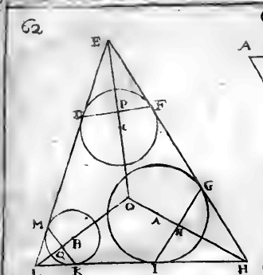

Propositio XVII · Theorema XV¶


PROP. XVII. THEOR. XV. (tab. 8. fig. 62, p. 53)
Si triangulum tres circulos comprehendat, cuius singula latera duos ex suppositis circulis contingant; ab vnoquoque verò angulo ad centrum sibi proximioris circuli lineae ducantur: istae si vlterius producantur, sibi inuicem in idem punctum occurrent.
Sint tres circuli, quorum centra CAB, & triangulum ipsos comprehendens sit LEH, tangatque illos in punctis MDFGIK; dico, si iungantur tres lineae HA, EC, LB, & producantur, in idem punctum sibi ipsis occurrere. Iungantur lineae DF, MK, GI, secantes lineas EC, LB, HO, in punctis PQN. Quoniam contingentes DE, EF, & DP, PF sunt inter se aequales; latus autem EP commune est vtrique triangulo DPE, FPE; erunt huiusmodi triangula inter se aequalia, proptereaque angulus DEP aequalis erit angulo FEP; cumque eadem ratione anguli MLQ, QLK, sint etiam aequales, itemque anguli IHN, GHN; constat tres lineas EC, HA, LB, sibi ipsis occurrere si producantur, quod &c.